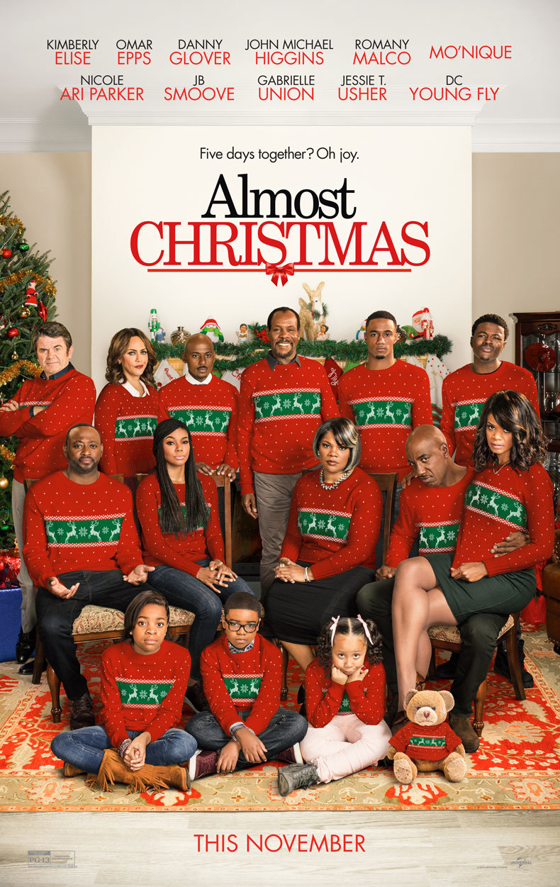
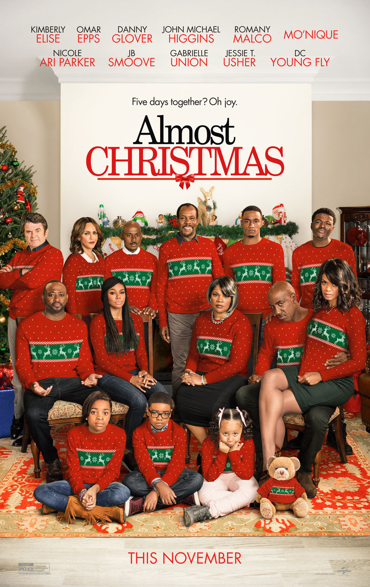
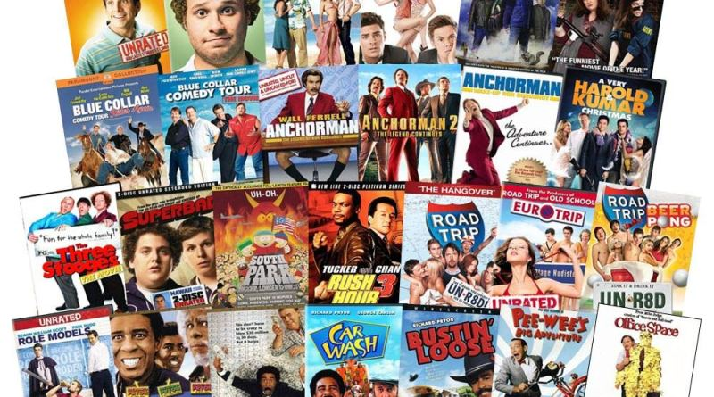
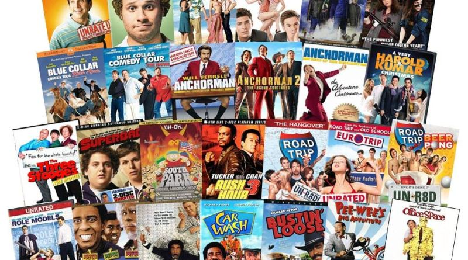
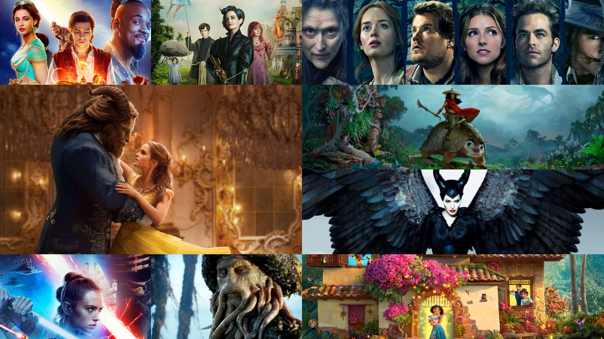
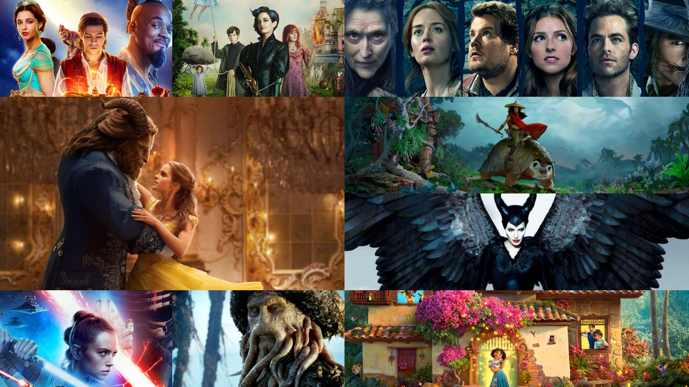

I like chrismas movies because they always have a happy ending and always showcase love, the importance of family and friends, and the make me happy. Eventhough they are very predictable I still enjoy watching them, I can watch chrismas movies the whole year. Maybe i just like chrismas.
 

I enjoy watching comedy movies because they always lighten up my mood, they have a way of making me forget all my problems. As we all know laughter is the best medicine.
 

I like fantasy movies because they are an escape from this hard reality we live in. You basically get to live in an alternate universe, where things that should not be happening happen. Fantasy movies broaden one's imagination and creativity, it makes it easy to think outside the box and come up with new ideas.
 
